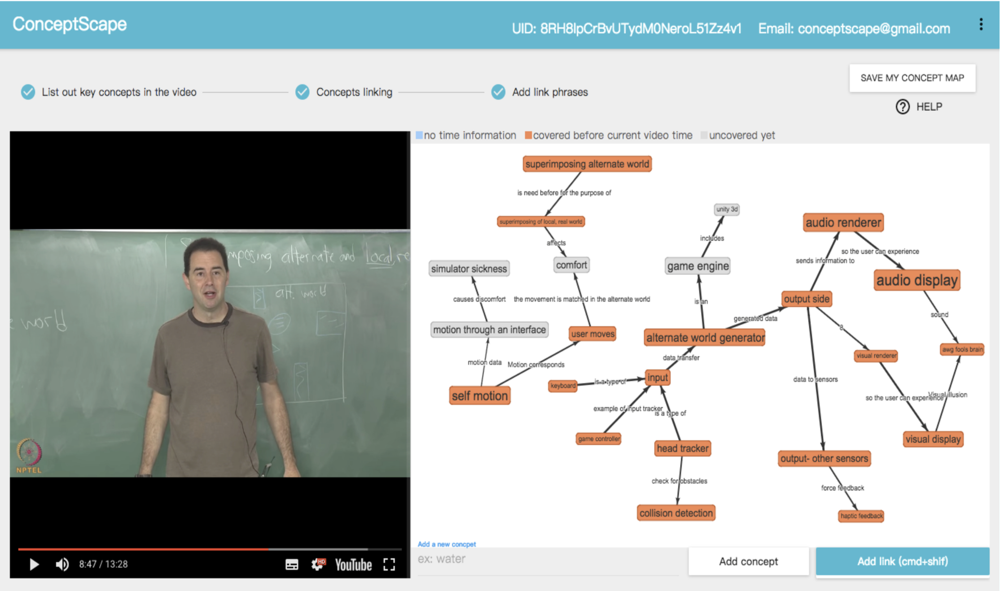
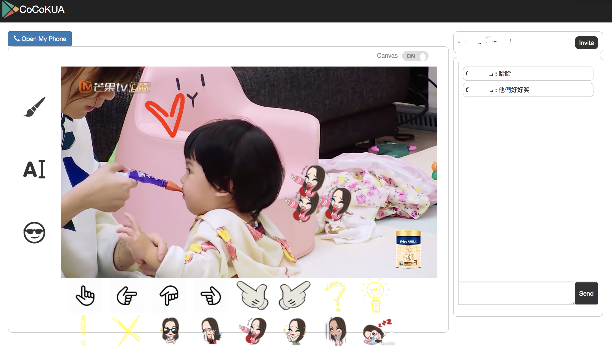

Recent Work

ConceptScape: Collaborative Concept Mapping for Video Learning
While video has become a widely adopted medium for on-line learning, existing video players provide limited support for navigation and learning. To support concept-driven navigation and comprehension of lecture videos, we present ConceptScape, a system that generates and presents a concept map for lecture videos. ConceptScape engages crowd workers to collaboratively generate a concept map by prompting them to externalize reflections on the video.

CoCoKUA: Augment Interaction for Video Co-watching by On-video Free-form Communication
While the prevalence of live video straming, people have increasing opportunity to watch video than before, leading to a new channel of online social interaction. However, users still can't quickly share their ideas by pointing on the screen while speaking to others just like what they can do in face-to-face situation. CoCoKUA is a video co-watching tool that integrates synchronous video playback and on-video annotations with text chat. Visit CoCoKUA website to experience new way to watch video with your friends.
Publication
Ching Liu, Juho Kim, Hao-Chuan Wang. ConceptScape: Collaborative Concept Mapping for Video Learning. 2018 ACM CHI full paper (Honorable Mention Award)
Ching Liu, Juho Kim, Hao-Chuan Wang. VideoScape: Augmenting video learning experience with concept map. 2017 TAICHI full paper
Chi-Lan Yang, Ching Liu and Hao-Chuan Wang. Understanding task transfer in workplace: interaction among human, artifact, and context. 2017 Chinese CHI full paper
Ching Liu. CoCoKUA: On-video Realtime Interaction via Synchronous Video Annotation. 2016 TAICHI Poster/System Demo Presentation
Affiliations
|
2013.09-now
|
BS and MS in National Tsing Hua University, Taiwan. Working in Collaborative and Social Computing Laboratory (CSC Lab).
|
|
2016.09-2017.06
|
Exchange student in Korea Advanced Institute of Science and Technology, Korea. Individual research in KAIST Interaction Lab (KIXLab).
|
|
2015.07 ~ 2015.09
|
Broadcom Ltd. Quality Assurance Summer Intern
|
|
2012.09-2013.09
|
BS in Automation, Tsinghua University, Beijing
|
{kind=link}
{kind=link}